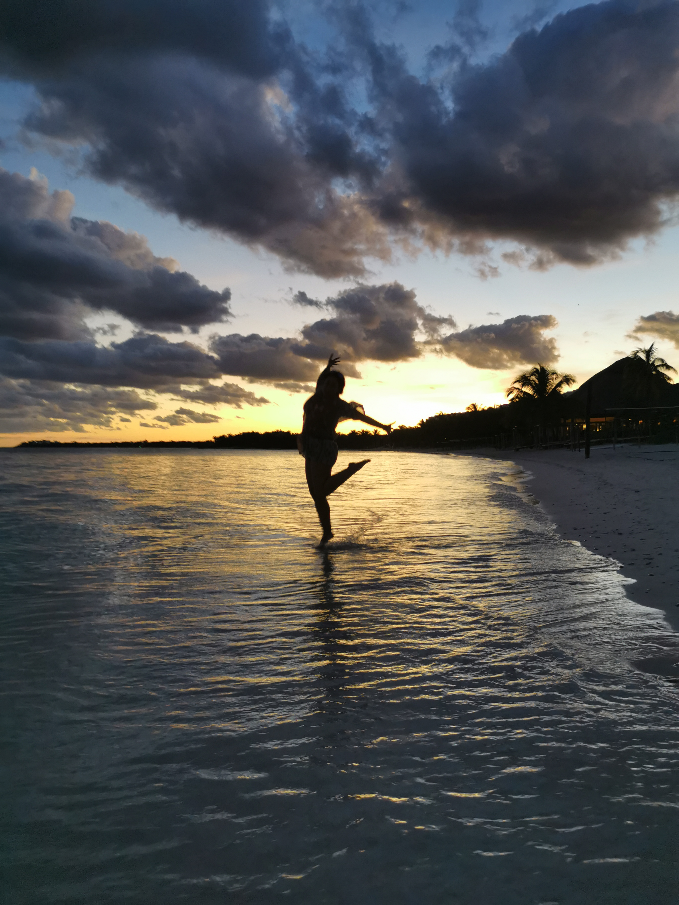
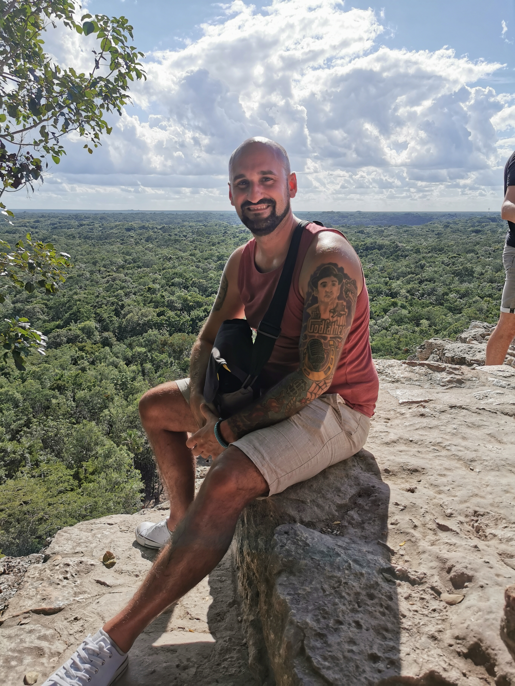
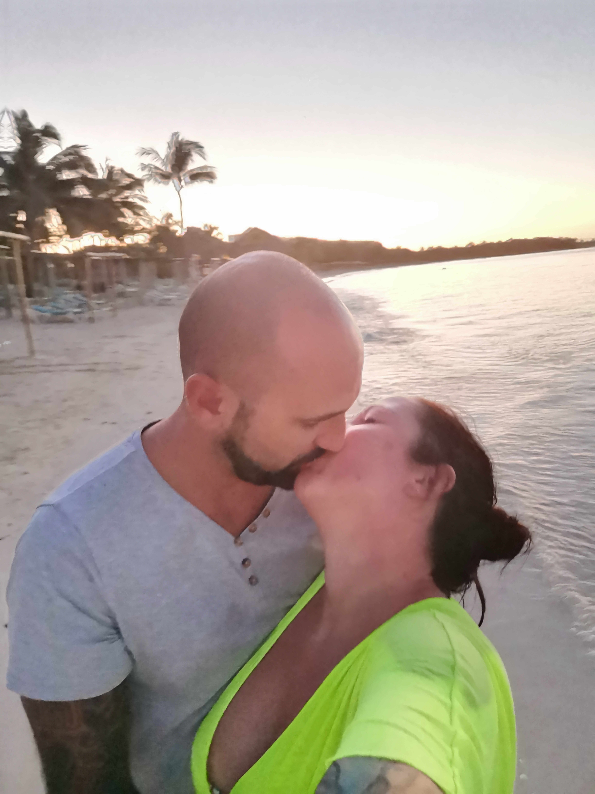
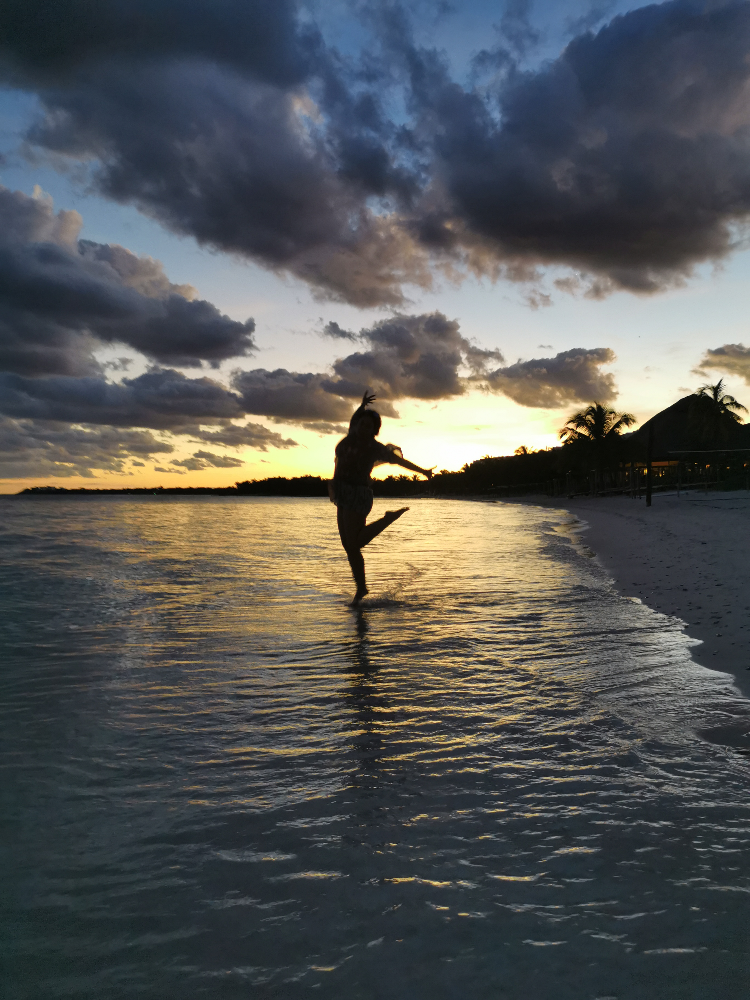
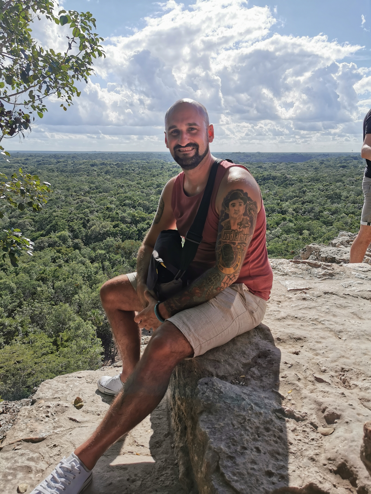
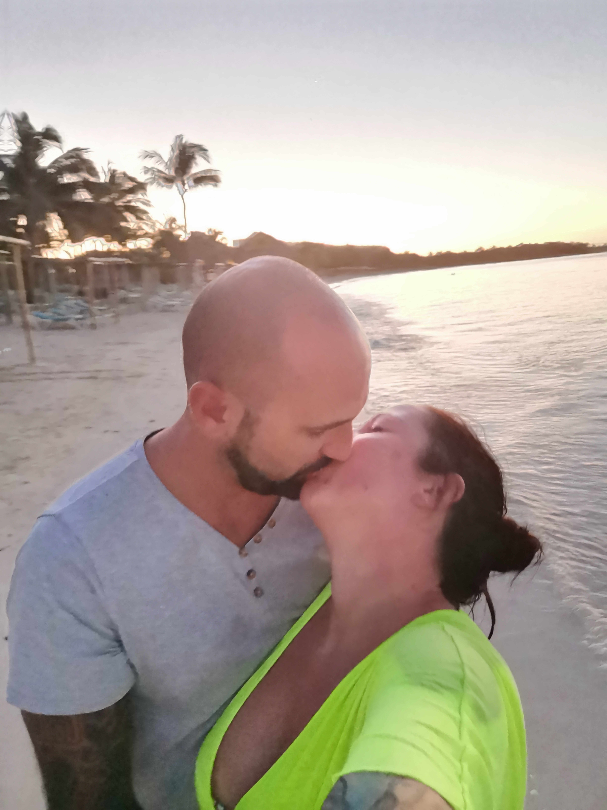
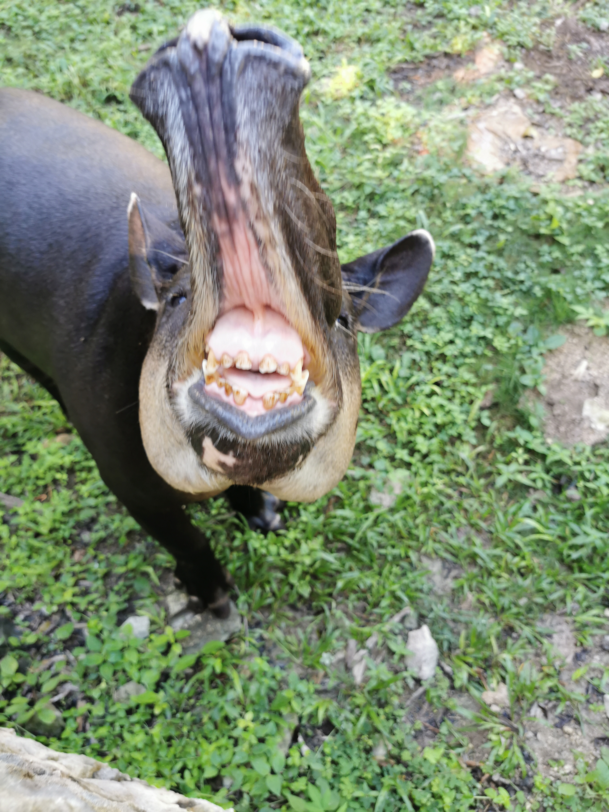
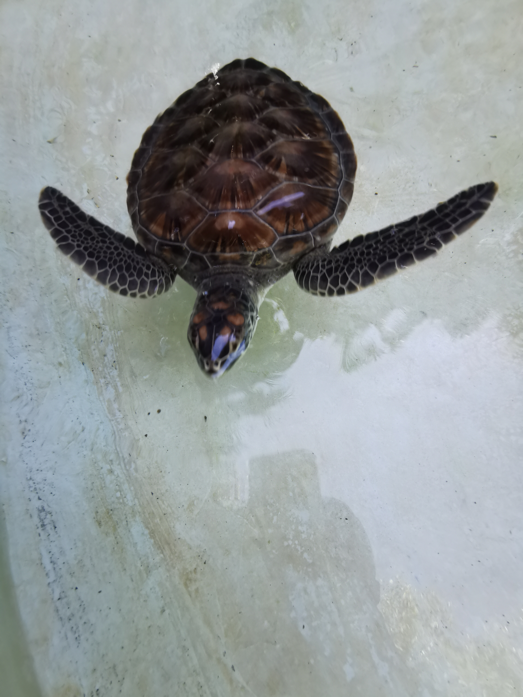
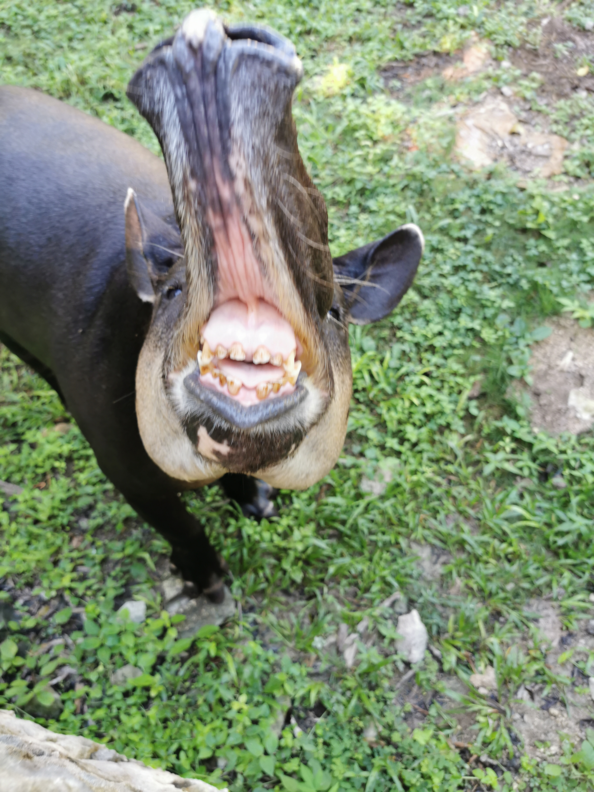
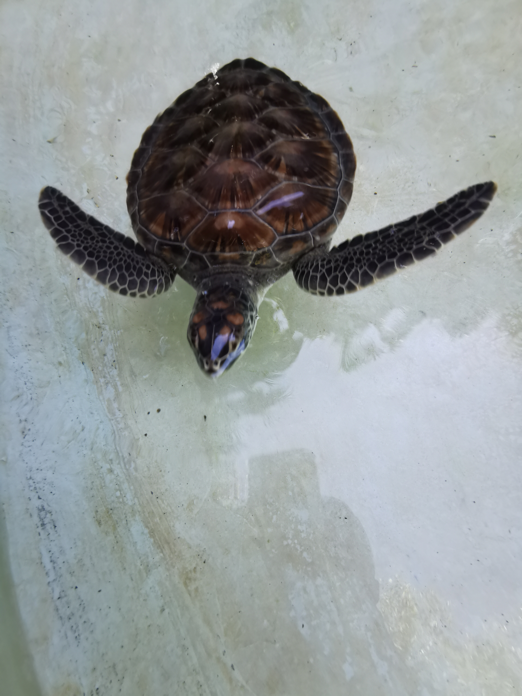

Unser erster gemeinsamer Urlaub... Weiße Strände, warme Sonne auf der Haut. Es war mein erster Urlaub und ich bin überglücklich ihn mit dir verbracht zu haben. Wir waren in Tulum, auf Cobá, Chichén Itzá (Chicken-Pizza) und an einem der schönsten Strände der Welt. Hier hast du mein Fernweh geweckt. Ich denke oft an diesn Urlaub zurück, da er mich so unglaublich beeindruckt hat. Aber nichtsdestotroz muss man ganz klar sagen, perfekt hast du diesen Urlaub gemacht!


 





 



© 2025 Der Betreiber dieser Webseite.
Alle auf dieser Webseite veröffentlichten Bilder und Inhalte sind urheberrechtlich geschützt und dürfen ohne
schriftliche Genehmigung nicht kopiert oder weiterverbreitet werden.